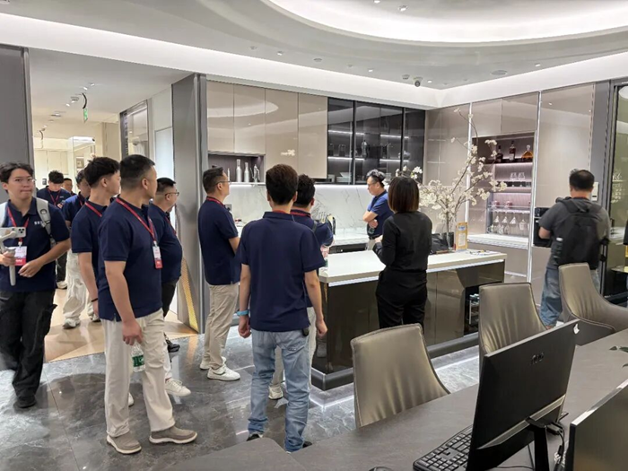

1
厨房空间设计 · 智慧厨房系统
“AI在当下・好厨电好房子”今日开场：厨电竞争转向空间、旧改与 AI 协同
这场论坛把“好房子”政策、老旧厨房改造、嵌入式套系、AI 智能交互和《中国好厨房6大趋势》放到同一场讨论里。

中国家电网预告，2026 厨电行业与市场发展研讨论坛于 8 月 25 日在天津召开，主题为“AI在当下 好厨电 好房子”。论坛将覆盖政策解读、行业趋势、AI 产业机会、新厨居生活与人群画像。
对厨电行业来说，这不是一次普通论坛。文章把一级能效、嵌入式、套系厨电、老旧住房改造和 AI 主动协同放在一起，说明竞争正在从单品功能走向“住宅品质提升 + 厨房空间交付 + AI智慧大脑”。
小编有话说今天最值得盯的是《中国好厨房6大趋势》。如果趋势报告足够具体，它可能会成为我们拆解厨房空间设计、品类创新和智能交互需求的一张地图。